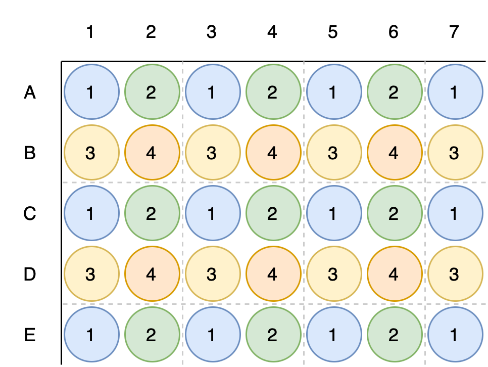

Using the 96 head#
Some liquid handling robots have a 96 head, which can be used to pipette 96 samples at once. This notebook shows how to use the 96 head in PyLabRobot.
Example: Hamilton STARLet#
Here, we’ll use a Hamilton STARLet as an example. For other robots, simply change the deck layout, makign sure that you have at least a tip rack and a plate to use.
from pylabrobot.liquid_handling import LiquidHandler, STAR
from pylabrobot.resources import STARLetDeck
from pylabrobot.resources import (
TIP_CAR_480_A00,
PLT_CAR_L5AC_A00,
TIP_50ul,
Cor_96_wellplate_360ul_Fb
)
lh = LiquidHandler(backend=STAR(), deck=STARLetDeck())
await lh.setup()
# assign a tip rack
tip_carrier = TIP_CAR_480_A00(name="tip_carrier")
tip_carrier[1] = tip_rack = TIP_50ul(name="tip_rack")
lh.deck.assign_child_resource(tip_carrier, rails=1)
# assign a plate
plt_carrier = PLT_CAR_L5AC_A00(name="plt_carrier")
plt_carrier[0] = plate = Cor_96_wellplate_360ul_Fb(name="plt")
lh.deck.assign_child_resource(plt_carrier, rails=7)
Liquid handling with the 96 head#
Liquid handling with the 96 head is very similar to what you would do with individual channels. The methods have 96 in their names, and they take TipRacks and Plates as arguments, as opposed to TipSpots and Wells in case of heads with individual pipetting channels.
await lh.pick_up_tips96(tip_rack)
For aspirations and dispenses, a single volume is passed.
Note
Only single-volume aspirations and dispenses are supported because all robots that are currently implemented only support single-volume operations. When we add support for robots that can do variable-volume, this will be updated.
await lh.aspirate96(plate, volume=50)
await lh.dispense96(plate, volume=50)
await lh.return_tips96()
Quadrants#
96 heads can also be used to pipette quadrants of a 384 well plate. Here, we’ll show how to do that.

from pylabrobot.resources import BioRad_384_DWP_50uL_Vb
plt_carrier[1] = plate384 = BioRad_384_DWP_50uL_Vb(name="plt384")
await lh.pick_up_tips96(tip_rack)
await lh.aspirate96(plate384.get_quadrant(1), volume=10)
await lh.dispense96(plate384.get_quadrant(2), volume=10)
await lh.aspirate96(plate384.get_quadrant(3), volume=10)
await lh.dispense96(plate384.get_quadrant(4), volume=10)
await lh.return_tips96()